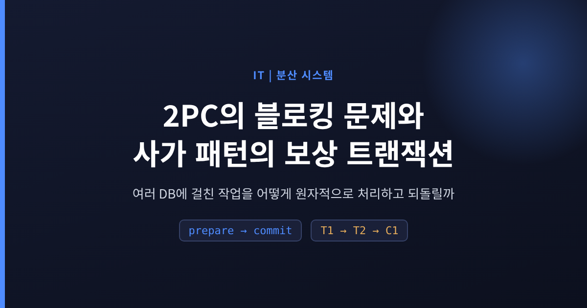
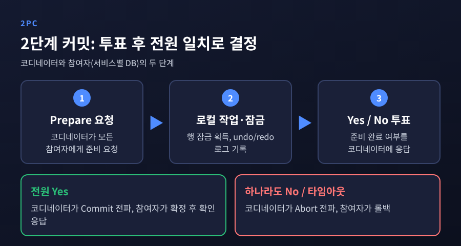
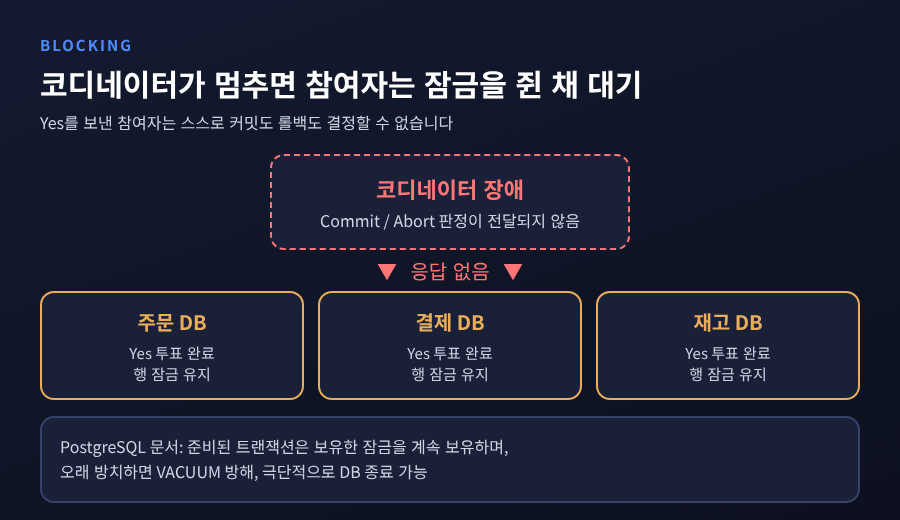
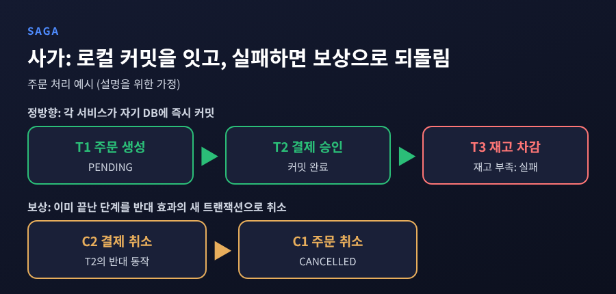
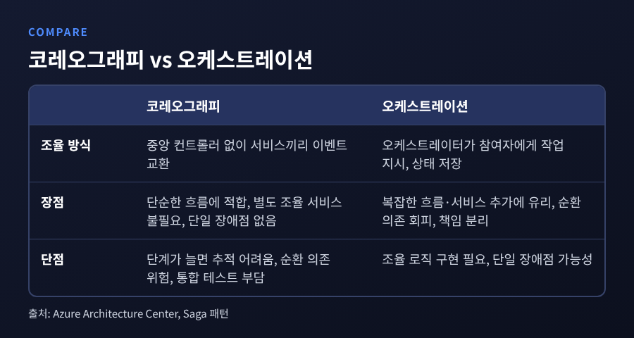
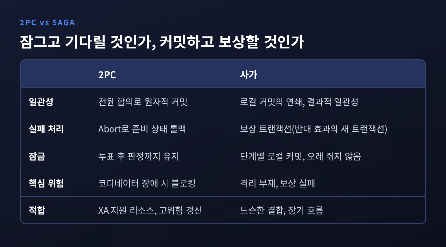

오늘은 여러 DB에 걸친 작업을 마이크로서비스가 어떻게 원자적으로 처리하고 되돌리는지 정리해 보려 합니다.
2단계 커밋(2PC)은 전원 합의로 일관성을 지키지만 코디네이터가 멈추면 잠금을 쥔 채 기다리는 블로킹 문제가 있고, 사가(Saga) 패턴은 로컬 트랜잭션을 이어 붙이다 실패하면 보상 트랜잭션으로 앞선 결과를 취소합니다.
핵심 차이는 "잠그고 기다릴 것인가, 먼저 커밋하고 나중에 취소할 것인가"입니다.
하나의 DB 안에서는 트랜잭션이 ACID를 보장합니다.
문제는 마이크로서비스처럼 서비스마다 전용 DB를 두는 구조입니다.
Azure Architecture Center는 전통적인 ACID 보장이 독립적으로 관리되는 여러 데이터 저장소에는 직접 적용되지 않는다고 설명합니다.
microservices.io가 드는 예가 이해하기 쉽습니다.
전자상거래에서 새 주문이 고객의 신용 한도를 넘으면 안 됩니다.
그런데 주문은 Order 서비스의 DB에, 신용 정보는 Customer 서비스의 DB에 있습니다.
로컬 ACID 트랜잭션 하나로는 두 DB를 묶을 수 없습니다.
여기서 선택지가 둘로 갈립니다.
처음부터 전원이 함께 커밋하도록 프로토콜을 쓰는 방법, 그리고 각자 커밋한 뒤 문제가 생기면 반대 동작으로 수습하는 방법입니다.
앞의 것이 2PC, 뒤의 것이 사가입니다.
2PC에는 코디네이터와 참여자가 등장합니다.
1단계는 투표 단계입니다. 코디네이터가 각 참여자에게 준비(prepare)를 요청하면, 참여자는 로컬에서 실제 작업을 수행하고 행 잠금을 잡은 뒤 undo/redo 로그를 남기고 yes 또는 no를 답합니다.
2단계는 커밋 단계입니다. 전원이 yes일 때만 커밋하고, 하나라도 no이거나 타임아웃이 나면 중단을 지시합니다.

로그가 중요한 이유가 있습니다.
Wikipedia에 따르면 로그 기록은 대체로 느리지만 장애에도 살아남기 때문에, 참여자는 yes를 보내기 전에 이를 먼저 남겨 둡니다.
2PC 자체가 사라진 것은 아닙니다.
현재도 Spring Boot는 JtaTransactionManager를 통해 여러 XA 리소스에 걸친 분산 트랜잭션을 지원하며, @Transactional을 그대로 쓸 수 있습니다.
2PC의 가장 큰 단점은 블로킹입니다. Wikipedia도 이를 가장 큰 단점으로 꼽습니다.
yes를 보낸 참여자는 스스로 결정할 수 없습니다. 커밋 또는 롤백 메시지가 올 때까지 기다려야 합니다.
코디네이터가 영구적으로 실패하면 일부 참여자는 자기 트랜잭션을 영영 해결하지 못합니다.
새 코디네이터가 나서더라도 모든 코호트 구성원이 응답할 때까지는 안전하게 진행할 수 없습니다.
기다리는 동안 참여자는 잠금을 놓지 못합니다.
PostgreSQL 공식 문서는 준비된 트랜잭션이 보유하던 잠금을 계속 보유한다고 밝힙니다.
오래 방치하면 VACUUM의 저장 공간 회수를 방해하고, 극단적인 경우 트랜잭션 ID 랩어라운드를 막으려 DB가 종료될 수도 있다고 경고합니다.
그래서 max_prepared_transactions 기본값이 0이고, 외부 트랜잭션 매니저를 구성하지 않았다면 0으로 두라고 권고합니다.
잊힌 준비 트랜잭션이 생기는 일을 막기 위해서입니다.

장애 범위도 짚어 둘 만합니다.
코디네이터만 실패했고 어떤 참여자도 커밋 메시지를 받지 않았다면, 커밋이 일어나지 않았다고 안전하게 추론할 수 있습니다.
반면 코디네이터와 참여자가 커밋 단계에서 함께 실패하면, 그 참여자가 이미 커밋했을 가능성 때문에 프로토콜이 안정적으로 복구하지 못합니다.
Gray와 Lamport의 논문은 이 한계를 이렇게 정리합니다.
2PC는 장애를 하나도 견디지 못하는 Paxos Commit의 자명한 버전이라는 것입니다.
Paxos Commit은 내결함성을 갖춘 비블로킹 커밋 알고리즘으로 소개됩니다.
다만 이 길은 합의 프로토콜을 직접 다루는 영역이라, 일반 서비스 코드에서 고르는 선택지는 아닙니다.
사가는 각 서비스가 자기 DB에 로컬 트랜잭션을 커밋하고, 이벤트나 메시지로 다음 단계를 촉발하는 구조입니다.
어느 단계가 실패하면 앞서 끝난 단계들에 대해 보상 트랜잭션이 실행됩니다.
원 논문은 사가를 장기 실행 트랜잭션을, 다른 트랜잭션과 섞여 실행될 수 있는 트랜잭션들의 시퀀스로 쪼갠 것으로 설명합니다.
LLT가 접근하는 객체를 커밋까지 모두 잠그면 다른 트랜잭션이 긴 잠금 지연을 겪고, 데드락과 중단 비율도 올라가기 때문입니다.
잠금 시간을 줄이려는 발상은 2PC의 블로킹과 정확히 맞닿아 있습니다.
주문 예시로 보겠습니다. 아래는 이해를 돕기 위한 가정입니다.
주문 서비스가 주문을 PENDING 상태로 만들고, 결제 서비스가 결제를 승인하고, 재고 서비스가 재고를 차감하려다 부족해서 실패합니다.
이때 결제 취소, 주문 취소라는 보상이 차례로 실행됩니다.

microservices.io의 예제도 같은 결입니다.
Order 서비스가 POST /orders를 받아 PENDING 상태로 주문을 만들고 Order Created 이벤트를 발행합니다.
Customer 서비스가 신용 예약을 시도하고 결과 이벤트를 내면, Order 서비스가 주문을 승인하거나 거절합니다.
사가를 조율하는 방식은 두 가지입니다.
코레오그래피는 중앙 컨트롤러 없이 서비스가 이벤트를 주고받습니다.
오케스트레이션은 오케스트레이터가 참여자에게 할 일을 지시하고 상태를 저장하며 실패 시 보상까지 맡습니다.

Azure 문서의 비교를 정리하면 이렇습니다.
서비스가 적은 단순한 흐름이라면 코레오그래피가 가볍고 단일 장애점도 없습니다.
다만 단계가 늘수록 어떤 서비스가 어떤 이벤트에 반응하는지 추적하기 어렵고, 순환 의존 위험이 생기며, 통합 테스트도 모든 서비스를 띄워야 합니다.
복잡한 흐름이나 서비스 추가가 잦다면 오케스트레이션이 낫습니다. 순환 의존을 피하고 책임이 분리됩니다.
대신 조율 로직을 구현해야 하고 오케스트레이터가 단일 장애점이 될 수 있습니다.
도구도 있습니다.
Apache Seata는 AT, TCC, Saga, XA 모드를 제공하고, Saga 모드에서는 참여자가 실패하면 앞서 성공한 참여자를 보상합니다. 보상 서비스는 개발자가 직접 구현합니다.
AWS는 Step Functions로 주문 처리 사가를 구성하는 예를 보여 줍니다.
이 부분이 가장 많이 오해되는 지점입니다.
사가 참여자는 이미 각자 DB에 커밋했기 때문에 데이터를 롤백할 수 없습니다.
보상은 반대 효과를 내는 새로운 트랜잭션입니다.
원 논문도 보상이 의미 차원에서 효과를 취소할 뿐, DB를 이전 상태로 반드시 되돌리지는 않는다고 말합니다.
좌석 예약의 보상은 좌석 수 복원이 아니라 예약 취소인 것처럼요.
그사이 다른 트랜잭션이 값을 바꿨을 수 있기 때문입니다.
설계할 때 마주치는 쟁점이 여럿 있습니다.
멱등성: 재시도로 단계가 여러 번 실행될 수 있으므로, 단계와 보상을 모두 멱등 커맨드로 설계해야 합니다. 보상 자체가 실패할 수 있기 때문입니다.
재시도 우선: 일시적 오류는 먼저 재시도하고, 반복 실패하거나 복구할 수 없을 때만 보상을 시작합니다.
피벗 트랜잭션: 사가의 되돌릴 수 없는 지점입니다. 이후 단계는 멱등한 재시도 가능 트랜잭션으로 구성해 끝까지 완료시킵니다.
되돌릴 수 없는 일: 이메일 발송이나 법적 구속 행위는 취소할 수 없습니다. 핵심 검증이 모두 끝난 뒤에 배치합니다.
비즈니스 판단: Azure의 항공·호텔 예시에서 호텔 예약이 실패하면, 항공을 곧바로 취소하기보다 다른 호텔을 제안하는 편이 낫습니다. 취소 결정은 시스템이 아니라 고객이 내립니다.
보상은 항상 성공하지 않는다는 점도 인정해야 합니다.
Azure 문서는 보상 트랜잭션이 실패하면 시스템이 불일치 상태로 남을 수 있다고 분명히 적습니다.
그래서 모니터링과 추적이 필수이고, 참여 서비스가 늘수록 디버깅이 어려워집니다. AWS 가이드도 같은 단점을 지적합니다.
사가에는 서비스 간 내장된 격리가 없습니다.
그래서 한 사가가 다른 사가의 변경을 덮어쓰는 갱신 손실, 완료되지 않은 변경을 읽는 더티 리드, 읽을 때마다 값이 달라지는 퍼지 리드가 생길 수 있습니다.
원 논문도 부분 실행된 사가의 효과를 다른 트랜잭션이 볼 수 있다고 인정합니다.
Azure 문서가 제시하는 대응책은 다음과 같습니다.
시맨틱 락: 갱신 중임을 나타내는 애플리케이션 수준 플래그. 앞서 본 PENDING 상태가 여기에 가깝습니다.
교환 가능한 갱신: 순서가 바뀌어도 결과가 같은 갱신
비관적 뷰: 갱신이 재시도 가능 트랜잭션에서 일어나도록 단계 재배치
값 재읽기, 버전 파일 기록
위험도 기반 동시성: 저위험 갱신은 사가, 고위험 갱신은 분산 트랜잭션
마지막 항목이 의미심장합니다.
사가가 2PC를 완전히 대체한다는 이야기가 아니라, 위험도에 따라 나눠 쓰라는 제안이니까요.
또 하나, 메시지 발행의 원자성입니다.
DB를 갱신하고 이벤트를 발행하는 두 작업을 묶기 어렵다는 이중 쓰기 문제가 있습니다.
트랜잭셔널 아웃박스는 발행할 메시지를 같은 로컬 트랜잭션 안에서 outbox 테이블에 저장하고, 별도 릴레이가 브로커로 전달합니다. 메시지는 DB 트랜잭션이 커밋될 때, 그리고 그때에만 전송이 보장됩니다.
다만 릴레이가 같은 메시지를 여러 번 보낼 수 있으므로 소비자 쪽 멱등성이 필요합니다.

정리하면 두 방식은 이렇게 나뉩니다.
2PC는 전원 합의로 원자성을 얻는 대신 잠금과 코디네이터 가용성에 묶입니다.
사가는 잠금을 오래 쥐지 않는 대신 격리와 보상 설계의 부담을 개발자가 집니다.
microservices.io는 DB나 브로커가 2PC를 지원하지 않을 수 있어 2PC가 선택지가 되기 어렵다는 입장입니다.
반면 Spring Boot와 PostgreSQL은 외부 트랜잭션 매니저를 통한 2PC 경로를 공식적으로 제공합니다.
어느 한쪽이 정답이라기보다, 참여 리소스가 XA를 지원하는지, 트랜잭션이 얼마나 오래 걸리는지, 실패했을 때 의미상 되돌릴 수 있는지를 따져 고르는 문제입니다.
AWS 가이드는 강결합을 피하고 한 서비스가 오래 걸려도 다른 서비스를 막고 싶지 않을 때 사가를 고려하라고 합니다.
정리하면 이렇습니다.
2PC는 잠그고 기다려서 일관성을 지키고, 사가는 먼저 커밋하고 의미상으로 되돌려서 일관성을 회복합니다.
어느 쪽이든 공짜는 없습니다. 하나는 블로킹을, 다른 하나는 보상 설계와 격리 부재를 대가로 치릅니다.
"일관성은 기능이 아니라 설계의 비용입니다."
되돌릴 수 없는 단계가 어디인지부터 그려 보라고 권하고 싶습니다. 그 지점을 알고 나면 나머지 설계는 생각보다 단순해지기 마련이니까요.